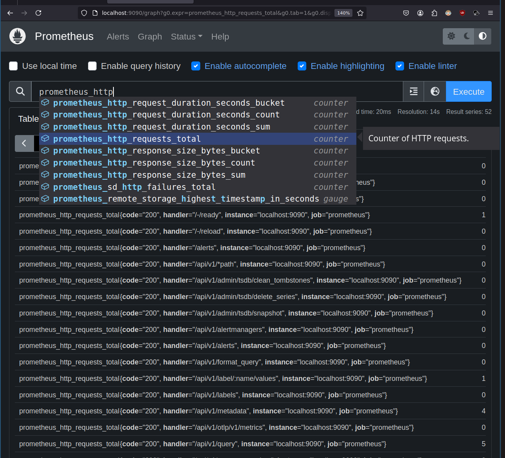

Prometheus là gì
The Prometheus monitoring system and time series /ˈsɪr.iːz/ database. Prometheus, a Cloud Native Computing Foundation project, is a systems and service monitoring system. It collects metrics from configured targets at given intervals, evaluates rule expressions, displays the results, and can trigger alerts when specified conditions are observed.
Prometheus là tên phần mềm metric monitoring tiêu chuẩn ngày nay. 10 năm trước là graphite. Stack phổ biến thời cloud: Prometheus lưu trữ time series, hiển thị biểu đồ dùng grafana, gửi cảnh báo alert dùng alertmanager.
Prometheus viết bằng Go, bắt nguồn từ SoundCloud, code xem tại https://github.com/prometheus/prometheus
Prometheus is an open-source systems monitoring and alerting toolkit originally built at SoundCloud. Since its inception in 2012, many companies and organizations have adopted Prometheus, and the project has a very active developer and user community. It is now a standalone open source project and maintained independently of any company. To emphasize this, and to clarify the project's governance structure, Prometheus joined the Cloud Native Computing Foundation in 2016 as the second hosted project, after Kubernetes.
Cài và chạy Prometheus
Cài đặt bằng việc tải file binary. Hay build từ source:
$ git clone https://github.com/prometheus/prometheus --branch v2.54.1
Cloning into 'prometheus'...
...
Receiving objects: 100% (118939/118939), 200.60 MiB | 7.23 MiB/s, done.
...
$ sudo apt install -y golang-1.21
...
Cài nodejs bản 20 để build frontend cho prometheus https://nodejs.org/en/download/package-manager
# installs nvm (Node Version Manager)
curl -o- https://raw.githubusercontent.com/nvm-sh/nvm/v0.40.0/install.sh | bash
# download and install Node.js (you may need to restart the terminal)
nvm install 20
# verifies the right Node.js version is in the environment
node -v # should print `v20.17.0`
# verifies the right npm version is in the environment
npm -v # should print `10.8.2
Build prometheus:
$ cd prometheus
$ make build
cd web/ui && npm install
changed 1609 packages, and audited 1615 packages in 28s
...
>> building binaries
.../promu build --prefix /home/hvn/code/prometheus
> prometheus
go: downloading github.com/KimMachineGun/automemlimit v0.6.1
go: downloading github.com/alecthomas/units v0.0.0-20240626203959-61d1e3462e30
...
>> building binaries
...bin/promu build --prefix /home/hvn/code/prometheus
> prometheus
Tạo file config https://prometheus.io/docs/introduction/first_steps/#configuring-prometheus:
$ cat <<EOF > prometheus.yaml
global:
scrape_interval: 15s
evaluation_interval: 15s
rule_files:
# - "first.rules"
# - "second.rules"
scrape_configs:
- job_name: prometheus
static_configs:
- targets: ['localhost:9090']
EOF
Chạy:
$ ./prometheus --config.file=./prometheus.yaml
ts=2024-09-12T13:28:55.525Z caller=main.go:601 level=info msg="No time or size retention was set so using the default time retention" duration=15d
...
ts=2024-09-12T13:29:14.998Z caller=web.go:571 level=info component=web msg="Start listening for connections" address=0.0.0.0:9090
...
Xem metric trên giao diện
Mở trình duyệt địa chỉ http://127.0.0.1:9090
Gõ http sẽ có "auto complete" để chọn metric prometheus_http_requests_total

Chọn label handler="/api/v1/query":
prometheus_http_requests_total{handler="/api/v1/query"}
Các metric này của chính chương trình Prometheus để tự monitor chính mình.
Cụ thể, time series trên đếm số lượt truy cập tới đường dẫn /api/v1/query, mỗi lần người dùng query metric qua giao diện trên sẽ tăng giá trị thêm 1.
Instant vector selector
Instant vector selectors allow the selection of a set of time series and a single sample value for each at a given timestamp (point in time). In the simplest form, only a metric name is specified, which results in an instant vector containing elements for all time series that have this metric name.
Instant vector selector trả về các time series và 1 giá trị cho mỗi time series tại thời điểm hiện tại.
Ví dụ:
prometheus_http_requests_total{handler="/api/v1/query"} trả về giá trị cho các label code khác nhau:
prometheus_http_requests_total{code="200", handler="/api/v1/query", instance="localhost:9090", job="prometheus"} 88
prometheus_http_requests_total{code="400", handler="/api/v1/query", instance="localhost:9090", job="prometheus"} 1
Range vector selector
Range vector literals work like instant vector literals, except that they select a range of samples back from the current instant. Syntactically, a time duration is appended in square brackets ([]) at the end of a vector selector to specify how far back in time values should be fetched for each resulting range vector element.
Range vector selector hoạt động như Instant vector selector, ngoại trừ việc nó trả về 1 dãy các giá trị trong khoảng thời gian lựa chọn tới thời điểm hiện tại. Ví dụ:
prometheus_http_requests_total{handler="/api/v1/query"}[1m] trả về:
prometheus_http_requests_total{code="200", handler="/api/v1/query", instance="localhost:9090", job="prometheus"}
90 @1726745269.174
92 @1726745284.174
105 @1726745299.174
114 @1726745314.174
prometheus_http_requests_total{code="400", handler="/api/v1/query", instance="localhost:9090", job="prometheus"}
1 @1726745269.174
1 @1726745284.174
1 @1726745299.174
3 @1726745314.174
Do trong file config cấu hình scrape_interval=15s, trong 1m (1 phút) sẽ có 4 giá trị kèm thời gian trả về.
Các function
Query function cung cấp sẵn các function để tính toán. Như tính
sum: tổngabs: giá trị tuyệt đốiavg_over_time: giá trị trung bìnhrate: giá trị tăng trung bình mỗi giâydelta: hiệu của giá trị đầu và cuối
Có thể thấy các function này hoạt động trên mỗi time series trong cùng 1 metrics, đa phần chỉ có ý nghĩa khi dùng với range selector (lấy trung bình của số lượt truy cập mỗi giây trong vòng 1 phút vừa rồi).
Viết rate(prometheus_http_requests_total{handler="/api/v1/query"}[1m]) trả về lần lượt giá trị cho từng series của cùng metric prometheus_http_requests_total:
{code="200", handler="/api/v1/query", instance="localhost:9090", job="prometheus"} 0.02222222222222222
{code="400", handler="/api/v1/query", instance="localhost:9090", job="prometheus"} 0
Để tập trung, ta sẽ chỉ query code="200".
delta() tính sai?
Dùng range vector selector:
prometheus_http_requests_total{code="200", handler="/api/v1/query"}[1m]
Trả về:
prometheus_http_requests_total{code="200", handler="/api/v1/query", instance="localhost:9090", job="prometheus"}
120 @1726745659.174
122 @1726745674.174
134 @1726745689.174
149 @1726745704.174
delta(v range-vector) calculates the difference between the first and last value of each time series element in a range vector v, returning an instant vector with the given deltas and equivalent labels.
https://github.com/prometheus/prometheus/blob/v2.54.1/docs/querying/functions.md#delta
Vậy nếu tính nhẩm có delta có giá trị là 149 - 120 = 29, nhưng kết quả lại là 38.666666666666. Vậy delta tính sai?
Khoan đã, tài liệu còn viết:
The delta is extrapolated to cover the full time range as specified in the range vector selector, so that it is possible to get a non-integer result even if the sample values are all integers.
extrapolated là gì?
extrapolate dịch ra tiếng Việt là "ngoại suy", ở đây kết quả được suy ra từ số liệu đã có. Tại sao phải suy?
vì lấy giá trị thời gian cuối trừ giá trị đầu 1726745704 - 1726745659 = 45 giây,
mà range cần lấy là 1m = 60 giây, nên tính năng của delta sẽ suy ra (149-120)/45 * 60 = 38.666666666666.
Vậy delta không tính sai, delta chỉ tính đúng như tài liệu của nó mô tả.
rate() tính đúng?
rate(v range-vector) calculates the per-second average rate of increase of the time series in the range vector. Breaks in monotonicity (such as counter resets due to target restarts) are automatically adjusted for. Also, the calculation extrapolates to the ends of the time range, allowing for missed scrapes or imperfect alignment of scrape cycles with the range's time period.
https://github.com/prometheus/prometheus/blob/v2.54.1/docs/querying/functions.md#rate
rate bằng (149-120)/45 = 0.64444444444 như mong đợi trong trường hợp này, nhưng tài liệu có nhắc tới "extrapolates" trong trường hợp khác.
Đọc code Prometheus
$ find . -name '*.go' | xargs grep delta
...
./promql/functions.go: "delta": funcDelta,
./promql/functions.go: "idelta": funcIdelta,
thấy file promql/functions.go là nơi chứa code của các function.
func funcDelta(vals []parser.Value, args parser.Expressions, enh *EvalNodeHelper) (Vector, annotations.Annotations) {
return extrapolatedRate(vals, args, enh, false, false)
}
// === rate(node parser.ValueTypeMatrix) (Vector, Annotations) ===
func funcRate(vals []parser.Value, args parser.Expressions, enh *EvalNodeHelper) (Vector, annotations.Annotations) {
return extrapolatedRate(vals, args, enh, true, true)
}
cả 2 đều gọi tới extrapolatedRate
Xem online https://github.com/prometheus/prometheus/blob/v2.54.1/promql/functions.go#L71-L173
// extrapolatedRate is a utility function for rate/increase/delta.
// It calculates the rate (allowing for counter resets if isCounter is true),
// extrapolates if the first/last sample is close to the boundary, and returns
// the result as either per-second (if isRate is true) or overall.
func extrapolatedRate(vals []parser.Value, args parser.Expressions, enh *EvalNodeHelper, isCounter, isRate bool) (Vector, annotations.Annotations) {
...
case len(samples.Floats) > 1:
numSamplesMinusOne = len(samples.Floats) - 1
firstT = samples.Floats[0].T
lastT = samples.Floats[numSamplesMinusOne].T
resultFloat = samples.Floats[numSamplesMinusOne].F - samples.Floats[0].F
...
// Duration between first/last samples and boundary of range.
durationToStart := float64(firstT-rangeStart) / 1000
durationToEnd := float64(rangeEnd-lastT) / 1000
sampledInterval := float64(lastT-firstT) / 1000
averageDurationBetweenSamples := sampledInterval / float64(numSamplesMinusOne)
// If the first/last samples are close to the boundaries of the range,
// extrapolate the result. This is as we expect that another sample
// will exist given the spacing between samples we've seen thus far,
// with an allowance for noise.
extrapolationThreshold := averageDurationBetweenSamples * 1.1
extrapolateToInterval := sampledInterval
...
extrapolateToInterval += durationToStart
if durationToEnd >= extrapolationThreshold {
durationToEnd = averageDurationBetweenSamples / 2
}
extrapolateToInterval += durationToEnd
factor := extrapolateToInterval / sampledInterval
if isRate {
factor /= ms.Range.Seconds()
}
if resultHistogram == nil {
resultFloat *= factor
} else {
resultHistogram.Mul(factor)
}
return append(enh.Out, Sample{F: resultFloat, H: resultHistogram}), annos
}
funcDelta có isRate=false isCounter=false, kết quả là
sampledInterval := float64(lastT-firstT) / 1000
factor := extrapolateToInterval / sampledInterval
resultFloat = samples.Floats[numSamplesMinusOne].F - samples.Floats[0].F
resultFloat * factor
hay
(giá trị cuối - giá trị đầu) * extrapolateToInterval / (thời gian sample cuối - thời gian sample đầu)
(149-120) * 60 /45 = 38.666666666666.
funcRate có isRate=true isCounter=true, kết quả là
sampledInterval := float64(lastT-firstT) / 1000
factor := extrapolateToInterval / sampledInterval
if isRate {
factor /= ms.Range.Seconds()
}
resultFloat = samples.Floats[numSamplesMinusOne].F - samples.Floats[0].F
if !isCounter {
break
}
// Handle counter resets:
prevValue := samples.Floats[0].F
resultFloat = samples.Floats[numSamplesMinusOne].F - samples.Floats[0].F
for _, currPoint := range samples.Floats[1:] {
if currPoint.F < prevValue {
resultFloat += prevValue
}
prevValue = currPoint.F
}
resultFloat * factor
hay
(giá trị sample cuối - giá trị sample đầu) * extrapolateToInterval / (thời gian sample cuối - thời gian sample đầu) / interval của range vector
(149-120) * 60 / 45 / 60 = 0.6444444444444444
đọc code trên thấy extrapolateToInterval thường cũng bằng với interval của range. Giá trị của rate có thể được extrapolated nếu series bị reset (Ví dụ: đang đếm tới 123 thì service được monitor bị restart đếm lại từ 0).
Kết luận
Prometheus function không tính sai, nó chỉ tính đúng như trong tài liệu mô tả. Hãy đọc tài liệu. Hoặc đọc code.
Hết.
HVN at http://pymi.vn and https://www.familug.org.
Ủng hộ đồng bào bị ảnh hưởng bởi cơn bão số 3.
Báo Tuổi Trẻ, Ngân hàng Công thương chi nhánh 3, TP.HCM. Số tài khoản: 113000006100 (Việt Nam đồng). Nội dung: Ủng hộ đồng bào bị ảnh hưởng bởi cơn bão số 3.